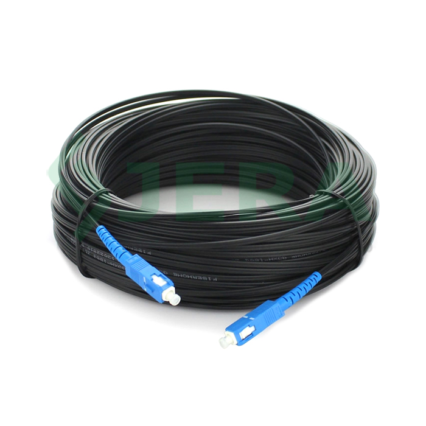

Pengalaman Saya
Saya memiliki pengalaman dalam melakukan crimping kabel LAN menggunakan kabel UTP dan konektor RJ45. Kegiatan ini melatih keterampilan teknis dan ketelitian dalam proses jaringan.

Saya pernah melakukan splicing (penyambungan) kabel Fiber Optic menggunakan alat splicer. Pengalaman ini memperkenalkan saya pada teknologi jaringan kecepatan tinggi.
Saya belajar membuat desain antarmuka menggunakan Figma, seperti tampilan website dan aplikasi. Ini meningkatkan pemahaman saya dalam UI/UX design.
Saya mampu melakukan konfigurasi dasar Mikrotik seperti pengaturan IP Address, DHCP Server, dan NAT. Hal ini penting dalam membangun jaringan lokal.